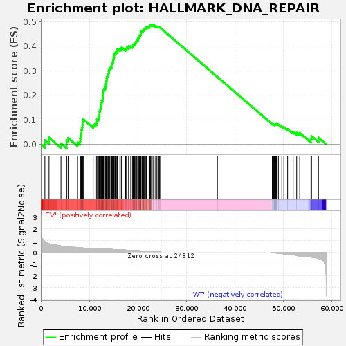

| | | Dataset | EV_WT_express.EV_WT.cls#EV_versus_WT |
| Phenotype | EV_WT.cls#EV_versus_WT |
| Upregulated in class | EV |
| GeneSet | HALLMARK_DNA_REPAIR |
| Enrichment Score (ES) | 0.48721188 |
| Normalized Enrichment Score (NES) | 1.3268952 |
| Nominal p-value | 0.011506276 |
| FDR q-value | 0.13547511 |
| FWER p-Value | 0.644 |
Table: GSEA Results Summary

Fig 1: Enrichment plot: HALLMARK_DNA_REPAIR
Profile of the Running ES Score & Positions of GeneSet Members on the Rank Ordered List
| SYMBOL | TITLE | RANK IN GENE LIST | RANK METRIC SCORE | RUNNING ES | CORE ENRICHMENT | | 1 | PDE6G | NNN | 837 | 0.902 | 0.0169 | Yes |
| 2 | POLH | NNN | 1690 | 0.723 | 0.0274 | Yes |
| 3 | TK2 | NNN | 4153 | 0.530 | 0.0038 | Yes |
| 4 | ERCC1 | NNN | 5288 | 0.459 | 0.0003 | Yes |
| 5 | ARL6IP1 | NNN | 5300 | 0.459 | 0.0160 | Yes |
| 6 | DCTN4 | NNN | 5623 | 0.449 | 0.0260 | Yes |
| 7 | ERCC4 | NNN | 7549 | 0.406 | 0.0072 | Yes |
| 8 | TP53 | NNN | 8076 | 0.384 | 0.0116 | Yes |
| 9 | RFC5 | NNN | 8127 | 0.383 | 0.0239 | Yes |
| 10 | DGCR8 | NNN | 8230 | 0.377 | 0.0352 | Yes |
| 11 | PRIM1 | NNN | 8360 | 0.371 | 0.0459 | Yes |
| 12 | MRPL40 | NNN | 8371 | 0.371 | 0.0585 | Yes |
| 13 | AGO4 | NNN | 8455 | 0.367 | 0.0698 | Yes |
| 14 | PCNA | NNN | 8570 | 0.363 | 0.0804 | Yes |
| 15 | AK1 | NNN | 8654 | 0.360 | 0.0914 | Yes |
| 16 | RRM2B | NNN | 8745 | 0.358 | 0.1023 | Yes |
| 17 | BRF2 | NNN | 10790 | 0.344 | 0.0793 | Yes |
| 18 | GTF2H5 | NNN | 11215 | 0.335 | 0.0837 | Yes |
| 19 | POLR3GL | NNN | 11540 | 0.325 | 0.0894 | Yes |
| 20 | POLR2A | NNN | 11547 | 0.325 | 0.1005 | Yes |
| 21 | RPA3 | NNN | 11846 | 0.315 | 0.1063 | Yes |
| 22 | SMAD5 | NNN | 11965 | 0.311 | 0.1151 | Yes |
| 23 | TARBP2 | NNN | 12064 | 0.308 | 0.1241 | Yes |
| 24 | RAD51 | NNN | 12066 | 0.308 | 0.1347 | Yes |
| 25 | TAF9 | NNN | 12242 | 0.303 | 0.1422 | Yes |
| 26 | ERCC8 | NNN | 12306 | 0.301 | 0.1516 | Yes |
| 27 | UPF3B | NNN | 12443 | 0.299 | 0.1596 | Yes |
| 28 | LIG1 | NNN | 12515 | 0.297 | 0.1687 | Yes |
| 29 | NME4 | NNN | 12555 | 0.296 | 0.1782 | Yes |
| 30 | XPC | NNN | 12726 | 0.292 | 0.1854 | Yes |
| 31 | NPR2 | NNN | 12747 | 0.291 | 0.1951 | Yes |
| 32 | SDCBP | NNN | 12795 | 0.289 | 0.2043 | Yes |
| 33 | ERCC3 | NNN | 12901 | 0.286 | 0.2124 | Yes |
| 34 | RFC3 | NNN | 12933 | 0.285 | 0.2218 | Yes |
| 35 | DDB2 | NNN | 13121 | 0.280 | 0.2282 | Yes |
| 36 | RFC4 | NNN | 13360 | 0.275 | 0.2337 | Yes |
| 37 | AK3 | NNN | 13415 | 0.273 | 0.2422 | Yes |
| 38 | TAF6 | NNN | 13457 | 0.271 | 0.2509 | Yes |
| 39 | POLR2I | NNN | 13493 | 0.270 | 0.2596 | Yes |
| 40 | RFC2 | NNN | 13568 | 0.268 | 0.2676 | Yes |
| 41 | MPC2 | NNN | 13640 | 0.267 | 0.2757 | Yes |
| 42 | SUPT4H1 | NNN | 13806 | 0.261 | 0.2819 | Yes |
| 43 | CANT1 | NNN | 13931 | 0.259 | 0.2887 | Yes |
| 44 | POLR2E | NNN | 13997 | 0.257 | 0.2965 | Yes |
| 45 | POLD3 | NNN | 14088 | 0.255 | 0.3038 | Yes |
| 46 | SNAPC5 | NNN | 14212 | 0.252 | 0.3104 | Yes |
| 47 | DDB1 | NNN | 14428 | 0.250 | 0.3154 | Yes |
| 48 | HPRT1 | NNN | 14618 | 0.245 | 0.3206 | Yes |
| 49 | TMED2 | NNN | 14637 | 0.244 | 0.3287 | Yes |
| 50 | CSTF3 | NNN | 14775 | 0.241 | 0.3347 | Yes |
| 51 | RNMT | NNN | 14910 | 0.237 | 0.3406 | Yes |
| 52 | NUDT21 | NNN | 14955 | 0.237 | 0.3481 | Yes |
| 53 | SRSF6 | NNN | 15026 | 0.235 | 0.3550 | Yes |
| 54 | SF3A3 | NNN | 15110 | 0.233 | 0.3616 | Yes |
| 55 | TYMS | NNN | 15127 | 0.232 | 0.3694 | Yes |
| 56 | DUT | NNN | 15335 | 0.232 | 0.3739 | Yes |
| 57 | FEN1 | NNN | 15583 | 0.226 | 0.3775 | Yes |
| 58 | USP11 | NNN | 15787 | 0.221 | 0.3816 | Yes |
| 59 | ZWINT | NNN | 15800 | 0.221 | 0.3891 | Yes |
| 60 | POLR2K | NNN | 16304 | 0.209 | 0.3877 | Yes |
| 61 | REV3L | NNN | 16587 | 0.204 | 0.3900 | Yes |
| 62 | POLR3C | NNN | 16686 | 0.202 | 0.3953 | Yes |
| 63 | VPS37B | NNN | 17476 | 0.183 | 0.3882 | Yes |
| 64 | POM121 | NNN | 17669 | 0.178 | 0.3911 | Yes |
| 65 | NCBP2 | NNN | 17739 | 0.177 | 0.3960 | Yes |
| 66 | POLA2 | NNN | 18118 | 0.167 | 0.3954 | Yes |
| 67 | ADCY6 | NNN | 18123 | 0.167 | 0.4011 | Yes |
| 68 | RPA2 | NNN | 18540 | 0.164 | 0.3997 | Yes |
| 69 | POLA1 | NNN | 18884 | 0.158 | 0.3993 | Yes |
| 70 | TSG101 | NNN | 19034 | 0.154 | 0.4021 | Yes |
| 71 | SURF1 | NNN | 19038 | 0.154 | 0.4073 | Yes |
| 72 | POLD1 | NNN | 19302 | 0.148 | 0.4080 | Yes |
| 73 | NFX1 | NNN | 19360 | 0.147 | 0.4121 | Yes |
| 74 | GTF2H1 | NNN | 19529 | 0.143 | 0.4142 | Yes |
| 75 | GPX4 | NNN | 19589 | 0.142 | 0.4181 | Yes |
| 76 | UMPS | NNN | 19694 | 0.140 | 0.4212 | Yes |
| 77 | RAE1 | NNN | 19796 | 0.138 | 0.4242 | Yes |
| 78 | ADA | NNN | 19986 | 0.133 | 0.4256 | Yes |
| 79 | DAD1 | NNN | 20078 | 0.131 | 0.4286 | Yes |
| 80 | STX3 | NNN | 20080 | 0.131 | 0.4331 | Yes |
| 81 | POLR2C | NNN | 20221 | 0.128 | 0.4351 | Yes |
| 82 | AAAS | NNN | 20297 | 0.127 | 0.4383 | Yes |
| 83 | IMPDH2 | NNN | 20350 | 0.126 | 0.4417 | Yes |
| 84 | DGUOK | NNN | 20486 | 0.123 | 0.4437 | Yes |
| 85 | RAD52 | NNN | 20535 | 0.122 | 0.4471 | Yes |
| 86 | VPS37D | NNN | 20570 | 0.121 | 0.4507 | Yes |
| 87 | RBX1 | NNN | 20600 | 0.120 | 0.4544 | Yes |
| 88 | GTF2B | NNN | 20651 | 0.120 | 0.4577 | Yes |
| 89 | POLR1D | NNN | 20657 | 0.120 | 0.4617 | Yes |
| 90 | CETN2 | NNN | 20903 | 0.113 | 0.4615 | Yes |
| 91 | GTF3C5 | NNN | 21016 | 0.111 | 0.4634 | Yes |
| 92 | EIF1B | NNN | 21125 | 0.108 | 0.4653 | Yes |
| 93 | NELFCD | NNN | 21232 | 0.106 | 0.4672 | Yes |
| 94 | HCLS1 | NNN | 21246 | 0.106 | 0.4706 | Yes |
| 95 | RALA | NNN | 21376 | 0.103 | 0.4720 | Yes |
| 96 | POLB | NNN | 21471 | 0.100 | 0.4738 | Yes |
| 97 | GTF2F1 | NNN | 21567 | 0.099 | 0.4756 | Yes |
| 98 | ERCC5 | NNN | 21720 | 0.094 | 0.4763 | Yes |
| 99 | GMPR2 | NNN | 21792 | 0.093 | 0.4783 | Yes |
| 100 | ALYREF | NNN | 21864 | 0.092 | 0.4803 | Yes |
| 101 | GTF2A2 | NNN | 22317 | 0.082 | 0.4754 | Yes |
| 102 | NT5C3A | NNN | 22333 | 0.082 | 0.4780 | Yes |
| 103 | TAF1C | NNN | 22347 | 0.081 | 0.4806 | Yes |
| 104 | POLR1C | NNN | 22412 | 0.080 | 0.4823 | Yes |
| 105 | NELFB | NNN | 22494 | 0.077 | 0.4836 | Yes |
| 106 | SEC61A1 | NNN | 22548 | 0.076 | 0.4853 | Yes |
| 107 | BCAM | NNN | 22589 | 0.075 | 0.4872 | Yes |
| 108 | NUDT9 | NNN | 22811 | 0.069 | 0.4858 | No |
| 109 | TAF10 | NNN | 22887 | 0.067 | 0.4869 | No |
| 110 | POLR2G | NNN | 23127 | 0.061 | 0.4849 | No |
| 111 | NT5C | NNN | 23315 | 0.056 | 0.4837 | No |
| 112 | ZNF707 | NNN | 23350 | 0.055 | 0.4850 | No |
| 113 | VPS28 | NNN | 23694 | 0.045 | 0.4807 | No |
| 114 | ERCC2 | NNN | 23719 | 0.045 | 0.4818 | No |
| 115 | APRT | NNN | 23862 | 0.040 | 0.4808 | No |
| 116 | POLR2J | NNN | 24139 | 0.032 | 0.4772 | No |
| 117 | SSRP1 | NNN | 24171 | 0.031 | 0.4777 | No |
| 118 | BOLA2 | NNN | 24189 | 0.030 | 0.4785 | No |
| 119 | POLR2D | NNN | 24191 | 0.030 | 0.4795 | No |
| 120 | GTF2H3 | NNN | 24247 | 0.028 | 0.4795 | No |
| 121 | NME1 | NNN | 24271 | 0.027 | 0.4800 | No |
| 122 | GUK1 | NNN | 24441 | 0.020 | 0.4779 | No |
| 123 | SUPT5H | NNN | 24545 | 0.016 | 0.4766 | No |
| 124 | CMPK2 | NNN | 36408 | 0.000 | 0.2745 | No |
| 125 | POLR2H | NNN | 47722 | -0.016 | 0.0823 | No |
| 126 | PNP | NNN | 47816 | -0.021 | 0.0814 | No |
| 127 | ITPA | NNN | 47852 | -0.023 | 0.0816 | No |
| 128 | POLL | NNN | 48012 | -0.031 | 0.0800 | No |
| 129 | POLD4 | NNN | 48127 | -0.037 | 0.0793 | No |
| 130 | COX17 | NNN | 48197 | -0.041 | 0.0796 | No |
| 131 | NME3 | NNN | 48232 | -0.042 | 0.0804 | No |
| 132 | MPG | NNN | 48323 | -0.046 | 0.0805 | No |
| 133 | EDF1 | NNN | 48371 | -0.048 | 0.0813 | No |
| 134 | ADRM1 | NNN | 48415 | -0.050 | 0.0823 | No |
| 135 | TAF12 | NNN | 48563 | -0.056 | 0.0818 | No |
| 136 | ELL | NNN | 48614 | -0.059 | 0.0829 | No |
| 137 | NELFE | NNN | 48696 | -0.063 | 0.0837 | No |
| 138 | BCAP31 | NNN | 48976 | -0.075 | 0.0815 | No |
| 139 | CLP1 | NNN | 49685 | -0.105 | 0.0731 | No |
| 140 | SNAPC4 | NNN | 50100 | -0.122 | 0.0703 | No |
| 141 | TAF13 | NNN | 50878 | -0.160 | 0.0625 | No |
| 142 | CDA | NNN | 52023 | -0.217 | 0.0505 | No |
| 143 | SAC3D1 | NNN | 52744 | -0.254 | 0.0470 | No |
| 144 | CCNO | NNN | 53377 | -0.307 | 0.0469 | No |
| 145 | PDE4B | NNN | 55689 | -0.396 | 0.0212 | No |
| 146 | POLE4 | NNN | 55814 | -0.414 | 0.0334 | No |
| 147 | POLR2F | NNN | 57240 | -0.519 | 0.0271 | No |
Table: GSEA details [plain text format]
Fig 2: HALLMARK_DNA_REPAIR
Blue-Pink O' Gram in the Space of the Analyzed GeneSet
Fig 3: HALLMARK_DNA_REPAIR: Random ES distribution
Gene set null distribution of ES for HALLMARK_DNA_REPAIR